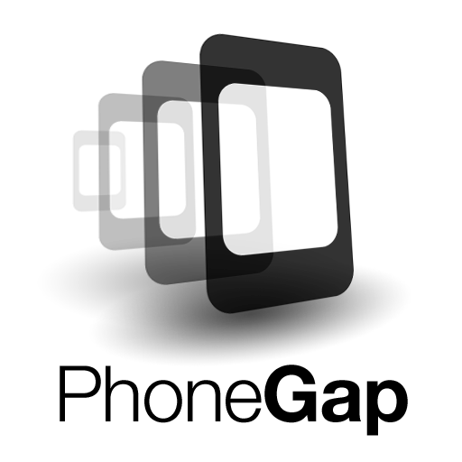

Inicialmente, fue desarrollado por Nitobi bajo licencias de software libre, pero para Octubre de 2011 Adobe anunció oficialmente la adquisición de Nitobi, pasando, así PhoneGap al control del gigante del software, gran interesado en la evolución de HTML5. Esto generó una gran incertidumbre entre los desarrolladores, pues el framework podía pasar a ser una tecnología propietaria, pero en una genial estrategia, Adobe donó PhoneGap a la fundación Apache, conservando de esta forma la integridad libre de PhoneGap.En la actualidad, el proyecto en el sitio web de la fundación Apache esta nombrado como: "Apache Cordova", pero PhoneGap sigue siendo una especie de marca comercial, por lo que aún se sigue usando ese nombre para identificar al popular framework- Puedes encontrar más información de PhoneGap en la siguiente dirección www.phonegap.com, donde podrás descargar la última versión del framework que al escribir este artículo es la 1.7.0.
PhoneGap también es compatible con frameworks de desarrollo web móvil como jQuery Mobile, Sencha Touch, Dojo, jQTouch, SprountCore, GloveBox, XUI, iScroll, entre otros.

PhoneGap es una solución de Adobe que nos permite llevar el desarrollo para la web al mundo de los dispositivos. Se basa en una “envoltura” que nos permite ejecutar aplicaciones desarrolladas con HTML, CSS y Javascript como si fueran aplicaciones nativas para los teléfonos móviles o tablets.
Las aplicaciones que podemos desarrollar con PhoneGap se pueden publicar en las conocidas tiendas de aplicaciones (Google Play, Windows Store o App Store de Apple) y, al igual que las aplicaciones nativas, también son capaces de acceder a los periféricos de los dispositivos como la cámara, acelerómetro, etc.
Lo mejor de PhoneGap es que permite escribir una única vez el código de la aplicación, con tecnologías HTML5, y publicarlo en cualquier plataforma móvil dentro de las más conocidas. Así que, o bien desarrollas tu aplicación en nativo para cada uno de los sistemas operativos, con el consiguiente trabajo que ello conlleva, o la programas una única vez usando alguna plataforma como PhoneGap.
PhoneGap es un framework para el desarrollo de aplicaciones nativas de sistemas operativos móviles, haciendo uso de tecnologías web como HTML5, CSS3 y JavaScript. Con PhoneGap es posible desarrollar aplicaciones para los siguientes sistemas operativos:
Android
iOS
Windows Phone
BlackBerry OS
Web OS
Symbiam
Bada